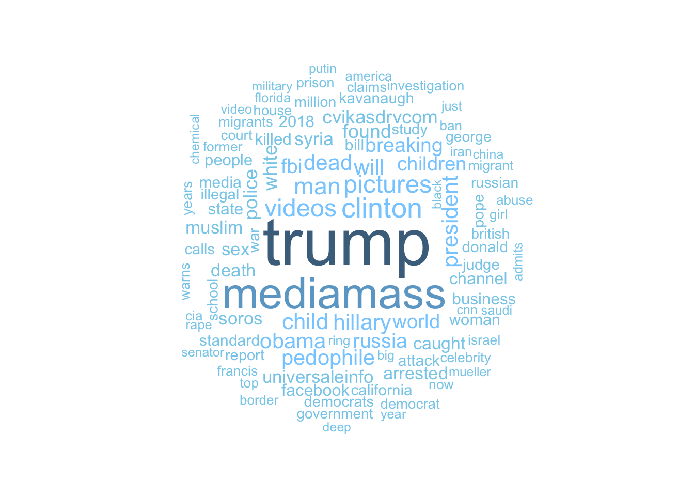

Fake news have been a growing concern for an online community. Not only young generation usually get fooled by these news, but the old generation can also mistake these as real information. In order to help readers to avoid these news, a detailed analysis with website names, types of articles, and text mining may prove useful.
The purpose of this analysis is to explore a fake news dataset from BuzzFeedNews. It contains 13961 fabricated articles on Facebook in 2018 from various websites.
The data contains 13961 observations with 7 variables:
title: a title of a news articleurl: website urlfb_engagement: count of facebook engagement (comments, likes, shares)published_date: when an article was releasedcategory: what an article is aboutA quick look at the data:
| title | url | fb_engagement | published_date | category | source |
|---|---|---|---|---|---|
| Lottery winner arrested for dumping $200,000 of manure on ex-boss’ lawn | https://worldnewsdailyreport.com/lottery-winner-arrested-for-dumping-200000-of-manure-on-ex-boss-lawn/ | 2,383,021.00 | 2018-05-13 | Crime | |
| Former first lady Barbara Bush dies at 92 - CNN | http://breaking-cnn.com/former-first-lady-barbara-bush-dies-92/ | 2,290,000.00 | 2018-04-16 | Politics | Trendolizer |
| Woman sues Samsung for $1.8M after cell phone gets stuck inside her vagina | https://worldnewsdailyreport.com/woman-sues-samsung-for-1-8m-after-cell-phone-gets-stuck-inside-her-vagina/ | 1,304,430.00 | 2018-09-19 | Medical | |
| BREAKING: Michael Jordan Resigns From The Board At Nike-Takes ‘Air Jordans’ With Him | https://trumpbetrayed.us/all/breaking-michael-jordan-resigns-from-the-board-at-nike-takes-air-jordans-with-him/ | 911,336.00 | 2018-09-05 | Business | |
| Donald Trump Ends School Shootings By Banning Schools | https://www.8shit.net/donald-trump-ends-school-shootings-banning-schools/ | 830,116.00 | 2018-02-23 | Politics |
Before analyzing data, we need to format each variable and extract useful information.
published_date to date format:data$published_date <- as.Date(data$published_date, format = "%Y-%m-%d")fb_engagement to numeric:data$fb_engagement <- round(as.integer(data$fb_engagement),0)map_dbl(data, function(x) sum(is.na(x)))## title url fb_engagement published_date category
## 0 0 0 0 0
## source
## 0#extract website from url
web_data <- data %>%
mutate(website=str_extract(url, pattern = "(https://|http://).*?\\.(com|net|us|org|uk|co|fr|website)"))
#Combine duplicated websites
web_data <- web_data %>%
mutate(website = case_when(
website == "http://yournewswire.com" ~ "https://yournewswire.com",
website == "https://neonnettle.com" ~ "http://www.neonnettle.com",
website == website ~ website))web_data %>%
select(published_date) %>%
group_by(published_date) %>%
summarise(total_articles = n()) %>%
ggplot(aes(x=published_date, y=total_articles)) +
geom_line(color = "sky blue") +
stat_smooth(color = "#FC4E07",method = "auto", se = FALSE)+
theme_bw() +
labs(title = "Count of Fake News Articles",
subtitle = "Included every categories from Dec 2017-Dec 2018",
x = "Published Date",
y = "Number of Articles")+
theme(plot.title = element_text(face="bold")) +
geom_text(aes(x=as.Date("2018-07-20 "), y=560, label="Sudden spike in count"))web_data %>%
filter(published_date == "2018-07-20") %>%
group_by(website) %>%
summarise(count=n()) %>%
top_n(9, count) %>%
ggplot(aes(x=reorder(website, count), y=count, fill=website))+
geom_bar(stat="identity", show.legend = F)+
theme_bw()+
theme(plot.title = element_text(face="bold"))+
coord_flip()+
labs(title = "Sudden Spike in 07-20-2018",
x="Website",
y="Count")web_data %>%
group_by(website) %>%
summarise(count = n()) %>%
top_n(9, count) %>%
ggplot(aes(x=reorder(website, count), y=count, fill=website))+
geom_bar(stat="identity", show.legend = F)+
theme_bw()+
theme(plot.title = element_text(face="bold"))+
coord_flip()+
scale_fill_brewer(palette = "Blues")+
labs(title = "Websites with Highest Count of Articles",
y = "Number of Articles",
x = "Website")web_data %>%
filter(website %in% c("https://yournewswire.com","https://newspunch.com","http://www.neonnettle.com",
"https://en.mediamass.net","https://adobochronicles.com",
"http://www.truthandaction.org","http://www.12minutos.com","https://uokhun.uk",
"http://www.cvikasdrv.com")) %>%
ggplot(aes(x = fb_engagement, y = website)) +
geom_density_ridges_gradient(aes(fill = ..x..), scale = 2, size = 0.1, quantile_lines = TRUE, quantiles = 2) +
xlim(0,3500)+
theme_bw()+
scale_fill_gradientn(colours = c("#003399", "#0099FF", "#CCFFFF"), name="Facebook Engagement") +
theme(plot.title = element_text(face="bold")) +
labs(title = "Facebook Engagement Distribution of Top Websites",
x = "Facebook Engagement",
y = "Website",
subtitle = "Middle line indicates median")knitr::kable(web_data %>%
filter(website %in% c("https://yournewswire.com","https://newspunch.com","http://www.neonnettle.com",
"https://en.mediamass.net","https://adobochronicles.com",
"http://www.truthandaction.org","http://www.12minutos.com","https://uokhun.uk",
"http://www.cvikasdrv.com")) %>%
filter(category != "") %>%
select(website,category) %>%
group_by(category) %>%
summarise(count=n()) %>%
arrange(desc(count)))| category | count |
|---|---|
| Sean Adl-tabatabai | 2835 |
| Neon Nettle | 1398 |
| Niamh Harris | 1284 |
| Baxter Dmitry | 1154 |
| Pol Pinoy | 654 |
| Jay Greenberg | 614 |
| 12minutos.com | 424 |
| Admin | 278 |
| Daniel Newton | 211 |
| Paul Whitehead | 111 |
| Jessica Simpson | 101 |
| Riva Mendoza | 101 |
| Jacky Murphy | 95 |
| Carol Kearney | 56 |
| John White | 43 |
| Lori Macatee | 35 |
| Scott Morefield | 26 |
| Elizabeth Sy | 25 |
| Zach Selby | 25 |
| Katie Dawson | 23 |
| Phil Crabtree | 22 |
| Rebecca Miles | 21 |
| Sammie Dean | 20 |
| Smith Alexander | 20 |
| Susan Garner | 20 |
| Thomas Williams | 20 |
| Brent Meslow | 18 |
| Allison Fey | 16 |
| Daniel Chaitin | 15 |
| Allison Park | 14 |
| Jim Leap | 14 |
| Bethenny Jackson | 13 |
| Daniel Boffey | 9 |
| Carol Adl | 8 |
| Sarah George | 7 |
| Savannah Pointer | 7 |
| Adobo Chronicles | 6 |
| Bryan Murray | 6 |
| Crime | 6 |
| Sean Higgins | 6 |
| Connie Higgins | 5 |
| Politics | 5 |
| Geoff Harbaugh | 4 |
| Levi Perry | 4 |
| Michael Green | 4 |
| James Bennett | 3 |
| Paul Bedard | 3 |
| ❌ Baxter Dmitry ❌ | 3 |
| Alan Smithee | 2 |
| Bloomberg Businessweek | 2 |
| Capitol Police | 2 |
| Jacob Wohl | 2 |
| Jacqui Deevoy | 2 |
| Judicial Watch | 2 |
| Norwegian Lawmakers | 2 |
| Nullifying Tax | 2 |
| Pippa Crerar | 2 |
| Un Workers | 2 |
| Adam Shaw | 1 |
| Attorney General | 1 |
| De Niro | 1 |
| Edward Wong | 1 |
| Emily Saul | 1 |
| Grayson Black | 1 |
| Hoffmann Daily | 1 |
| Jacob Pramuk | 1 |
| Jake Sherwood | 1 |
| Jane Harvey | 1 |
| Janet Monrose | 1 |
| Katelyn Caralle | 1 |
| Kimberly Strassel | 1 |
| Lee Miller | 1 |
| North Korea | 1 |
| Obama Spy | 1 |
| Patriot Prayer | 1 |
| President Donald | 1 |
| President Erdogan | 1 |
| President Trump | 1 |
| Rice University | 1 |
| Robert Costa | 1 |
| Ron Dixon | 1 |
| San Diego | 1 |
| Senate Republicans | 1 |
| The Daily | 1 |
| Vanessa Kirby | 1 |
| Wendy Mcqueen | 1 |
wordcloud(term_frequency_df$name, term_frequency_df$frequency, max.words = 100, random.order = FALSE, random.color = FALSE, colors= c("skyblue","skyblue1","skyblue2","skyblue3", "skyblue4"))
This analysis provided top websites with fake content to avoid. It also gives a glimpse onto topics such as politic that usually has a lot of fake news. However, this is not an exhausted list of every websites, Facebook users should be careful and selective with what content they read. Maybe next time, keeping or banning a list of fake news website is a good idea!